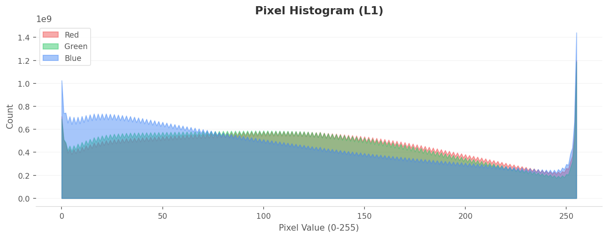
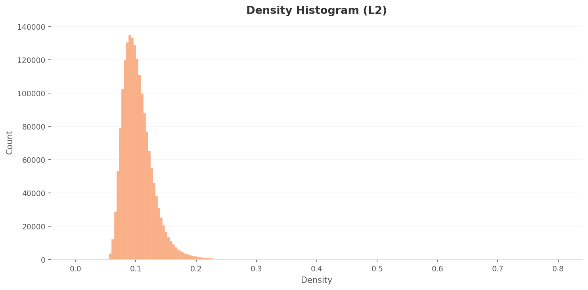
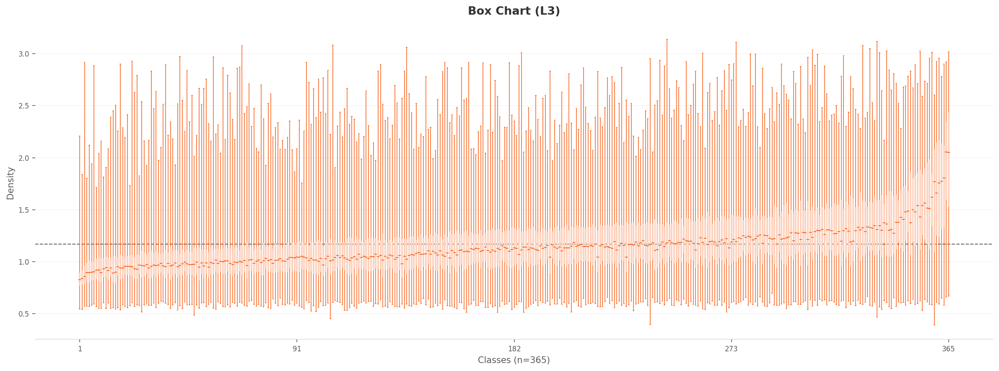

Executive Summary
MIT CSAIL의 Places365는 장소 인식 AI의 표준 벤치마크다. 180만 장, 365개 카테고리. 클래스당 평균 4,941장, 표준편차 260. 표면적으로는 가장 균형 잡힌 데이터셋 중 하나다. 사물 인식에 ImageNet이 있다면, 장소 인식에는 Places365가 있다. 그런데 차이가 하나 있다. 사물에는 윤곽이 있고, 장소에는 없다.
DataClinic 진단은 균형 아래 숨은 구조적 문제를 드러낸다. 16종의 식음료 공간, 8종의 거주 공간 등 최소 61개 클래스가 피처 공간에서 중첩된다. amusement_arcade에는 하키 전광판이, mosque-outdoor에는 타지마할이 섞여 있다. 라벨은 정돈되어 있지만, 이미지가 말하는 장소는 라벨과 다르다.
AI가 가장 확신하는 장소는 일본식 젠 가든이다. 밀도 0.660. AI가 가장 헤매는 장소는 강의실이다. 밀도 0.032. 격차 20배. "균일한 분포"라는 외피 아래에서, 365개 장소의 시각적 정체성은 극심하게 불균등하다. 가장 풍부한 데이터가 반드시 좋은 데이터는 아니다.
데이터셋 개요 — CV의 두 번째 기둥
Places365는 MIT CSAIL의 Bolei Zhou 교수팀이 2017년에 발표한 대규모 장소 인식 데이터셋이다. 논문 제목은 "Places: A 10 Million Image Database for Scene Recognition." 컴퓨터 비전에서 ImageNet이 "무엇이 있는가"를 묻는다면, Places365는 "여기가 어디인가"를 묻는다. 두 데이터셋은 CV 연구의 양대 기둥이다.
아래 콜라주는 Places365의 극단적 다양성을 한눈에 보여준다. 해변과 식당부터 젠 가든과 경기장까지, 365가지 장소가 만든 세계다.

▲ 180만 장의 Places365 — 해변과 식당부터 젠 가든과 경기장까지, 365가지 장소가 만든 세계
전체 1,803,460장. 365개 클래스. RGB 99.75%, 흑백 0.25%. 이미지 크기는 400x134에서 7,972x512까지 매우 다양하다. 웹 크롤링 기반으로 수집한 데이터셋의 특성이 그대로 드러난다. 클래스당 평균 4,941장으로, 자율주행, 로봇 내비게이션, AR/VR, 부동산 AI 등 장소 인식이 필요한 거의 모든 분야에서 사실상의 표준 벤치마크로 쓰인다.
DataClinic 리포트
리포트 #126 | 렌즈: Wolfram ImageIdentify Net V2 (v1.6) | 전체 진단 결과 보기 →
1.1ImageNet vs Places365 — 무엇이 다른가
두 데이터셋의 본질적 차이는 "경계의 유무"다. ImageNet에서는 고양이와 개의 실루엣이 다르다. 사물에는 윤곽선이 있고, AI가 잡을 수 있는 앵커가 있다. 그런데 식당과 카페를 구별하는 앵커는 무엇인가? 테이블 배치? 조명 밝기? 365개 카테고리를 나누는 경계선은, 이미지만으로는 보이지 않는 경우가 많다.
| 항목 | ImageNet | Places365 |
|---|---|---|
| 이미지 수 | 143만 장 | 180만 장 |
| 클래스 수 | 1,000개 (사물) | 365개 (장소) |
| 분류 대상 | 사물, 동물 | 장소, 씬 |
| 클래스 균형 | 1,300장/클래스 | 4,941장/클래스 (std 260) |
| 핵심 도전 | 비슷한 사물 구별 | 같은 곳인데 다른 이름 |
첫눈에 완벽한 균형 — Level I 진단
Level I은 이미지 자체의 기초 통계를 살핀다. 클래스 균형, 픽셀 분포, 평균 이미지. Places365의 첫인상은 놀라울 정도로 깔끔하다.
2.1클래스 균형 — 의도적 설계의 증거
클래스당 평균 4,941장, 표준편차 260장. 평균의 5.3%에 불과한 편차다. 365개 클래스 중 94%가 정확히 5,000장을 갖고 있다. 26개 클래스(7.1%)만 5,000장 미만이며, 최소는 dressing_room의 3,068장이다. MIT 연구팀이 의도적으로 균형을 설계했다는 증거다. 겉보기에는 교과서적 데이터셋이다. 문제는 이 균형 아래, 피처 공간에 있다.
2.2픽셀 히스토그램 — 하늘의 각인
RGB 채널별 픽셀 분포를 보면, Blue 채널이 전 구간에서 Red와 Green을 압도한다. 특히 value 255(순백)에서 Blue의 스파이크가 약 1.4x109 카운트에 달한다. 하늘이 포화된 야외 장소 이미지가 그만큼 많다는 뜻이다. 장소 데이터셋의 색채 지문이 여기에 찍혀 있다.

▲ Blue가 Red/Green을 압도한다 — 하늘과 바다가 많은 장소 데이터셋의 색채 지문
2.3전체 평균 이미지
180만 장을 모두 평균하면 어떤 이미지가 남을까. 균일한 회갈색 블러다. 모든 구조적 디테일이 사라진다. 그런데 자세히 보면 상단이 약간 밝고 하단이 약간 어둡다. 야외 장소의 보편적 구도가 통계에 각인되어 있다. 위는 하늘, 아래는 땅.

▲ 180만 장을 평균하면 남는 것: 위는 하늘, 아래는 땅
2.4극단의 6쌍 — AI가 가장 확신하는 장소, 가장 헤매는 장소
같은 데이터셋 안에서 AI의 확신도가 이만큼 갈린다. 고밀도 클래스는 시각적으로 극도로 독특하고 일관된 텍스처를 가진다. 저밀도 클래스는 라벨 오류이거나, 장소가 아니라 사람과 활동을 찍은 이미지다. 각 카드의 왼쪽은 실제 샘플 이미지, 오른쪽은 해당 클래스의 평균 이미지다.
AI가 가장 확신하는 장소 3
 실제
실제
 평균
평균
 실제
실제
 평균
평균
 실제
실제
 평균
평균
AI가 가장 헤매는 장소 3
 실제
실제
 평균
평균
 실제
실제
 평균
평균
 실제
실제
 평균
평균
▲ 각 카드 왼쪽: 클래스 대표 이미지(실제 샘플) / 오른쪽: 평균 이미지. 밀도 격차 20배.
zen_garden은 모래 파문이라는 독보적 텍스처가 있다. 어디서 찍어도 zen_garden이다. 반면 amusement_arcade의 저밀도 이상치는 하키 경기장 전광판이다. Scotiabank, Coca-Cola 광고와 점수판이 보이는 이 이미지는 오락실과 아무런 관련이 없다. 명백한 라벨 오류다. lecture_room에는 오케스트라 리허설 장면이 섞여 있다. 장소가 아니라 활동을 찍은 이미지다.
365개 장소의 시각적 정체성 — Level II 진단
Level II는 1,280차원 Wolfram 피처 공간에서 이미지를 분석한다. 픽셀이 아니라 신경망이 인식하는 고차원 특성으로 데이터를 본다. 이 단계에서 Places365의 진짜 모습이 드러난다.
3.1L2 밀도 분포 — 대부분이 구별 없이 몰려 있다
L2 밀도 히스토그램은 강한 right-skewed 분포를 보인다. 피크는 약 0.085-0.09에서 약 135,000 카운트. 대부분의 이미지가 0.06-0.15 구간에 밀집되어 있다. 고차원 피처 공간에서 대부분의 장소 이미지가 비슷한 밀도 영역에 위치한다는 뜻이다. 장소끼리의 구별이 약하다.

밀도 분포
최고밀도
 박스 차트
최저밀도
박스 차트
최저밀도
▲ 왼쪽: 차트 / 오른쪽: 해당 밀도 극단의 대표 이미지
3.2PCA와 밀도 히트맵 — 하나의 거대한 구름
1,280차원을 2D로 투영하면, 365개 클래스의 평균 피처가 단일 타원형 클러스터를 형성한다. 실내와 실외 장소가 2D에서는 중첩되어 하나의 구름으로 보인다. 볼록 껍질(convex hull)은 상단-우측으로 뾰족한 연(kite) 형태인데, 소수의 극단적 클래스가 피처 공간에서 멀리 떨어져 있다는 뜻이다.

L2 PCA — 단일 타원형 클러스터

L2 밀도 히트맵 — 중앙 집중
3.3저밀도의 원인 두 가지
저밀도 이상치를 분석하면 원인이 두 가지로 갈린다. 첫째는 라벨 오류다. amusement_arcade(밀도 0.037)의 이상치는 하키 경기장 전광판 클로즈업이다. 오락실 게임기와는 아무런 관련이 없는 이미지가 오락실 라벨을 달고 있다. 둘째는 사람 중심 이미지다. lecture_room(밀도 0.032)의 이상치는 오케스트라 리허설 장면이다. 지휘자와 연주자가 프레임을 가득 채워서, 신경망이 "장소"를 인식할 수 없다. 공간이 아니라 활동을 찍은 것이다.
고밀도의 원인은 명확하다. zen_garden의 모래 파문, throne_room의 붉은 벽과 금박 장식, mosque-outdoor의 돔과 미나렛. 시각적으로 극도로 독특하고 일관된 클래스가 피처 공간에서 강하게 응집한다. 다만 mosque-outdoor 고밀도 이미지 중에는 타지마할이 포함되어 있다. 영묘(mausoleum)인데 모스크로 라벨링된 것이다.
차원 최적화의 효과 — Level III 진단
Level III는 1,280차원을 70차원으로 축소하면서 클래스 구별력을 최적화한다. L2에서 숨어 있던 구조가 L3에서 드러난다.
4.1L3 밀도 분포 — 더 넓게, 더 뚜렷하게
L3 밀도 분포는 L2보다 더 넓게 퍼져 있다. 피크는 약 0.85-0.95에서 약 43,000 카운트로, L2 피크의 약 1/3 수준이다. 밀도 범위도 0.4-3.1로 L2(0.03-0.66)보다 훨씬 넓다. 차원 축소와 클래스 구별력 최적화 후, 이미지들이 피처 공간에서 더 분산되었다는 뜻이다.
 밀도 분포
밀도 분포
 고밀도
고밀도

박스 차트
저밀도
▲ L3에서는 클래스별 밀도 차이가 더 뚜렷하게 드러난다
4.2PCA와 밀도 히트맵 — 구조적 분리의 증거
L3 PCA 투영은 L2보다 더 둥글고 균일한 포인트 분포를 보인다. L2에서 보이던 극단적 외곽 포인트들이 줄어들어, 클래스 간 피처 분포가 더 컴팩트해졌다. L3 밀도 히트맵은 L2와 확연히 다르다. L2가 단일 고밀도 집중을 보인 반면, L3에서는 2-3개의 밀도 중심이 형성된다. 차원 최적화가 피처 공간의 구조적 분리를 만들어낸 증거다.

L3 PCA — 더 둥글고 균일

L3 밀도 히트맵 — 2-3개 밀도 중심
L2 vs L3 핵심 차이: L2는 "모든 장소가 하나의 구름"이었다. L3는 "장소들이 그룹을 형성하기 시작한다." 차원을 줄이면서 불필요한 잡음을 제거하면, 숨어 있던 내부 구조가 비로소 보인다. 그러나 L3에서도 혼동 그룹 간의 경계는 여전히 모호하다.
진짜 문제 — 서로 닮은 장소들
Places365의 구조적 문제는 밀도 격차가 아니라, 서로 닮은 장소들이다. 365개 카테고리 중 최소 61개(16.7%)가 피처 공간에서 서로의 영토를 침범한다. 6개 혼동 가능 그룹이 이를 보여준다.
| 혼동 그룹 | 클래스 수 | 대표 클래스 | 실전 영향 |
|---|---|---|---|
| 식음료 공간 | 16종 | restaurant, cafeteria, bar, coffee_shop, pub... | 음식 배달 AI가 카페와 식당을 혼동 |
| 야외 수역 | 11종 | ocean, coast, beach, lagoon, lake... | 드론 착지점 판단 혼동 |
| 경기장 | 10종 | arena-hockey, stadium-baseball, gymnasium... | 내비게이션 POI 오분류 |
| 자연 지형 | 9종 | mountain, canyon, cliff, butte, volcano... | 등산 안전 AI 오판 |
| 실내 거주 공간 | 8종 | bedroom, hotel_room, dorm_room, bedchamber... | 부동산 자동 분류 오류 |
| 전시 공간 | 7종 | museum-indoor, art_gallery, library-indoor... | 관광 가이드 봇 혼동 |
식음료 공간이 16종으로 가장 많다. restaurant, cafeteria, dining_hall, dining_room, food_court, fastfood_restaurant, pizzeria, sushi_bar, coffee_shop, bar, pub-indoor, beer_hall, beer_garden, delicatessen, bakery-shop, ice_cream_parlor. 이 16개 클래스가 공유하는 시각적 요소는 "테이블, 의자, 조명"이다. 촬영 구도도 유사하다. 피처 공간에서 높은 중첩이 예상된다.
실내 거주 공간의 문제는 더 심각하다. bedroom, bedchamber, hotel_room, dorm_room. 이 4개 클래스는 "침대, 조명, 가구"라는 거의 동일한 시각적 구성을 가진다. AI의 눈에 침실과 호텔방은 같은 장소다.
similarity nearest 분석이 이를 뒷받침한다. arena-performance의 이웃에 basketball_court-indoor과 gymnasium-indoor이 혼재한다. 경기장 계열 클래스의 피처가 실제로 중첩되고 있다는 증거다. 반대로, sandbox는 10개 이웃이 모두 sandbox, landfill도 10개 모두 landfill이다. 시각적으로 독특한 클래스는 자기 영토를 지킨다. 평범한 장소일수록 남의 영토를 침범한다.
365개 카테고리는 학술적으로는 정밀하다. 그러나 AI의 눈에는 61개가 남의 영토를 침범한다. 분류 체계의 정밀함과 시각적 구별 가능성은 별개의 문제다.
So What — 이 데이터로 장소를 학습시키면
Places365의 문제가 실전에서는 어떻게 나타나는가. 세 가지 시나리오를 그려본다.
6.1부동산 AI의 방 혼동
부동산 플랫폼이 매물 사진을 자동 분류한다. bedroom, bedchamber, hotel_room, dorm_room. 4개 클래스가 "침대 + 조명 + 가구"라는 거의 동일한 시각적 구성을 공유한다. AI는 원룸 사진을 호텔방으로 분류하고, 호텔방을 기숙사로 분류한다. 365개 클래스가 만든 세밀한 구분이 오히려 혼란의 원인이 된다.
6.2자율주행의 전광판 함정
amusement_arcade 라벨 아래 하키 경기장 전광판이 숨어 있다. 이런 라벨 오류로 학습한 자율주행 AI는 게임센터 간판을 보고 스포츠 경기장 근처라고 판단할 수 있다. 180만 장이라는 규모가 오류를 희석하지 못한다. 오히려 규모가 신뢰를 덧씌운다. "180만 장이나 되니까 괜찮겠지"라는 착각.
6.3문화재 안내 로봇의 혼동
mosque-outdoor 클래스의 고밀도 이미지가 타지마할이다. 영묘(mausoleum)인데 모스크로 라벨링되었다. 문화재 안내 로봇이 이 데이터로 학습하면 "이곳은 모스크입니다"라고 안내한다. 돔과 미나렛이라는 건축 특성이 비슷하지만, 기능은 전혀 다르다. 모스크는 예배 장소이고, 타지마할은 무덤이다.
아이러니: AI가 가장 확신하는 장소는 zen_garden(밀도 0.660)이고, 가장 혼란스러운 장소는 amusement_arcade(밀도 0.037)다. 밀도 격차 18배. 균일한 클래스 분포가 균일한 품질을 보장하지 않는다.
처방 — 365개 장소의 경계를 다시 긋기
Places365의 문제는 데이터의 양이 아니라 경계의 명확성이다. 네 가지 처방을 제안한다.
참고문헌
- • Zhou, B., Lapedriza, A., Khosla, A., Oliva, A., & Torralba, A. (2017). Places: A 10 Million Image Database for Scene Recognition. IEEE Transactions on Pattern Analysis and Machine Intelligence, 40(6), 1452-1464.
- • Deng, J., Dong, W., Socher, R., Li, L.-J., Li, K., & Fei-Fei, L. (2009). ImageNet: A large-scale hierarchical image database. CVPR 2009.
- • DataClinic Report #126 — Places365-standard. dataclinic.ai/ko/report/126